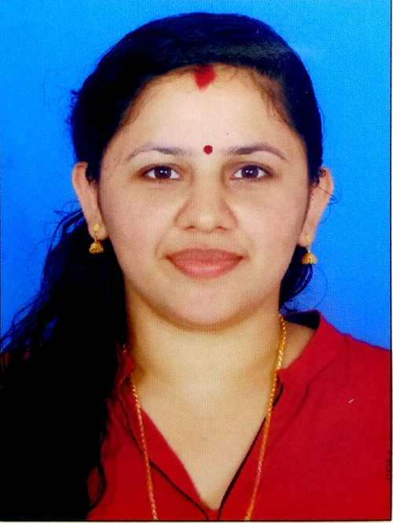

2015
MSc Mathematics
Sacred Heart College, Thevara
Mahatma Gandhi University, Kottayam
88%
Mathematics · Academia · Kerala, India
Mathematics postgraduate with several years of experience across colleges and universities in Kerala — currently at Rajagiri School of Engineering & Technology, Kakkanad.

01
My aim is a long-term career in a progressive organisation that offers good prospects for growth and advancement.
I hold an MSc and a BSc in Mathematics from Sacred Heart College, Thevara (Mahatma Gandhi University, Kottayam), and have worked with four institutions since 2015.
02
Jan 2022 — Present Current
Nov 2020 — Dec 2021
Jul 2019 — Mar 2020
Nov 2017 — Mar 2019
Sep 2015 — Mar 2016
03
2015
Sacred Heart College, Thevara
Mahatma Gandhi University, Kottayam
2013
Sacred Heart College, Thevara
Mahatma Gandhi University, Kottayam
2010
St. Joseph Public School, Pattanakkad
2008
St. Joseph Public School, Pattanakkad
04
One of the organisers of an international conference and a faculty development programme at Rajagiri School of Engineering & Technology.
Served as secretary of the Sample Survey and Analysis Wing during college.
Held secretary positions in associations and took charge of various functions at Sacred Heart College.
INS Venduruthy, Naval Base, Kochi.
Attended seminars, quizzes and other competitions.
05
Open to conversations about academic roles and collaborations.